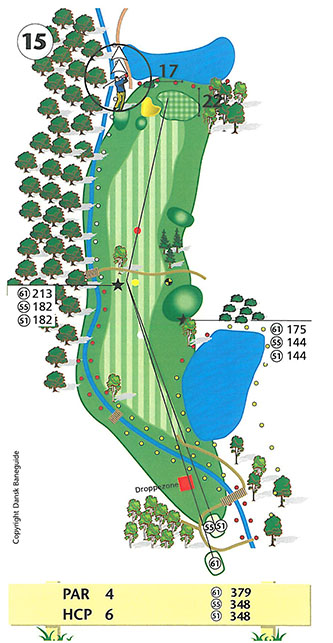
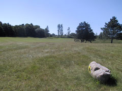
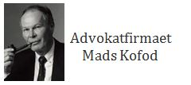

<div class="pages">
  <div data-page="hul15" class="page navbar-fixed toolbar-fixed" >
    <div class="navbar">
      <div class="navbar-inner">
        <div class="left">
          <a href="#" class="link back icon-only"><i class="icon icon-back"></i></a>
          <!-- <a href="#" class="back link icon-only"><i class="icon icon-back"></i></a> -->
        </div>
        <div class="center">Hul 15</div>
        <!-- <div class="right"></div> -->
        <div class="right">
        </div>
      </div>
    </div>
    <div class="page-content" style="padding-top:45px;">
       <div class="content-block">
          <center></center>
          <p>15. hul er et svært par 4 hul på trods af den rimelige længde.</p>
          <center></center>
          <p>Udslaget over Gurre å med en større sø i højre side bør landes så langt fremme i dog-legget som muligt. Skæve udslag til venstre kan havne i Gurre å og i højre side truer rough og en græsbeklædt knold, som vil gøre andetslaget svært.</p>
          <p>Indspillet til den mindste green på banen er svært på grund af bunkeren til venstre, samt en sø kun 3 meter bag green.</p>
          <p>Den stærkt skrånende green fra bagkant til forkant giver god mulighed for at høje indspil bliver liggende hvor de lander, men samtidig mulighed for nogle vanskelige flag-placeringer.</p>
          <p>For lav-handicapperen er et langt drive af afgørende betydning for at have så kort som muligt tilbage til det svære indspil. Sigt umiddelbart til højre for det lille birketræ i venstre side af fairway. Hvis green ikke rammes i indspillet, er det bedst at være kort af eller til højre for green, da alle små indspil fra området til venstre for green, er særdeles krævende.</p>
          <p>Hulsponsor: <br />
          <br /><br />
          Bænksponsor:<br />
          
          </p>
        </div>
    </div>
    </div>
    </div>
  </div>
</div>
